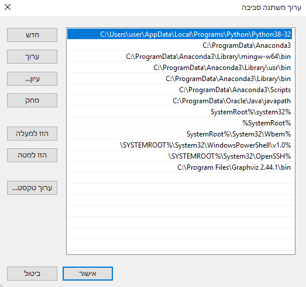

ראיתי את שני הפוסטים האחרים שפתוחים אבל כבר הלכתי לאיבוד.
כהתחלה התקנתי עם pip ולאחר מכן התקנתי מהאתר שלהם ווידאתי שהתיקייה נמצאת במשתני סביבה כמו שמתבקש מאיתנו.
כשזה עדיין לא עבד נכנסתי לפה לפורום כדי לנסות אם עוד מישהו נתקלתי בבעיה הזו והבנתי שאני צריך גם להתקין דרך conda, התקנתי דרך conda זה הוריד הכל בלי בעיה ורק הייתה לו בעיה לאשר כי נכנסתי ל cmd רגיל (מהיוזר שלי), לאחר מכן הפעלתי את ה cmd כאדמיניסטרטור, התקנתי שוב והפעם ההתקנה אושרה וה conda שלי עודכנה.
לא ברור לי עכשיו מה / איפה אני אמור לעשות, כשאני מנסה לייבא את graphviz ב VSC הוא לא מזהה אותו, אני אמור לעבוד עם ה VSC או שאני אמור לפתוח מחברת כמו שהיינו עובדים פעם ולעבוד בה?

הנה סקרינשוט של המשתני סביבה שלי (תחת PATH כמובן) ואפשר לראות שהוא שם (האחרון)
*עריכה:
גיליתי עכשיו שאם אני משנה בהגדרות (python: select interpreter) לגרסא 3.7.6 שהותקנה בזמנו ביחד עם האנקונדה אני מצליח לייבא אותם, בהתחשב בכך שאני מעדיף לעבוד עם גרסא 3.8.5 ושבנוסף לכך יש חלק בקוד שלי (ביום 2) שמחייב גרסא 3.8 ומעלה, איך אני יכול לסדר את ההגדרות כדי שהמודולים יעבדו עם גרסא 3.8.5?
**עריכה שנייה ואני מקווה שאחרונה:
נראה שהצלחתי להסתדר ע"י כך שהתקנתי את המודול מחדש הפעם בצורה הזו: python -m pip install graphviz
זה נראה שמשום מה כשאני מתקין בצורת pip intall graphviz החבילה מותקנת לאנקונדה במקום לפייתון ישירות, אם יש דרך לסדר את זה אשמח לשמוע, במידה ולא פשוט אתקין בצורה ההיא זאת לא בעיה.